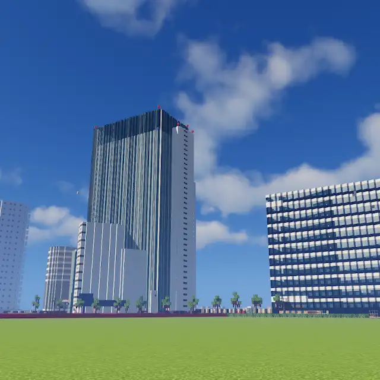

UMEDA DEVELOPMENT / PROJECT PROFILE
MINECRAFT × OSAKA
UMEDA DEVELOPMENTは、Minecraftの世界で大阪・梅田をモチーフにした街並みをつくるプロジェクトです。
建物の表情や街をつなぐ道、鉄道のある風景。街の魅力をブロックで表現し、訪れた人が歩いてみたくなる世界を目指しています。
建築と景色をつなぎ、歩いて楽しめる街を考えます。
鉄道や駅を通して、街の中に移動の風景をつくります。
アイデアを持ち寄り、プロジェクトの景色を育てます。